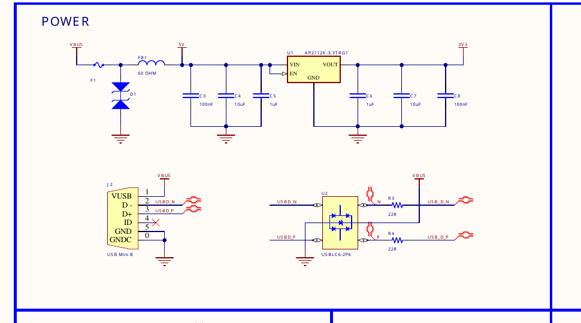
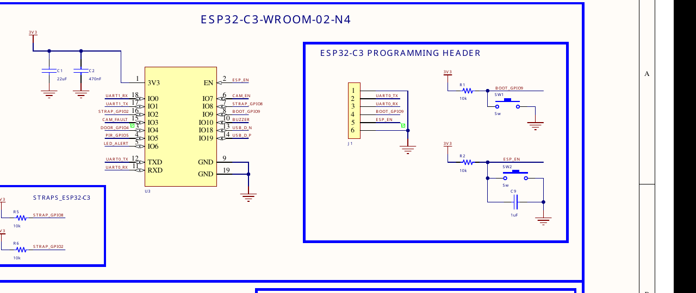
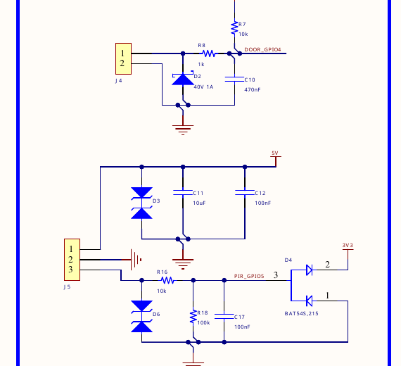
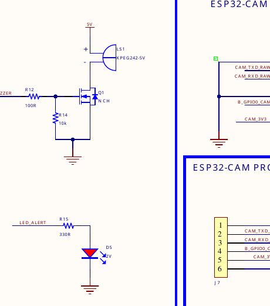
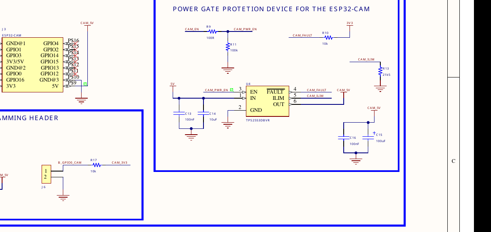

SecurityNode
Seguridad inteligente que verifica visualmente las amenazas antes de activar la alarma.
Jeronimo Vargas Orozco
jevargaso@unal.edu.co
¿Qué es SecurityNode?
Una plataforma de seguridad embebida que detecta intrusiones físicas y verifica amenazas usando visión por computadora — ejecutándose completamente en el borde, sin dependencia de la nube.
🚨 El Problema
Las alarmas tradicionales hacen ruido, pero no pueden decirte qué las activó. Mascotas, viento o usuarios autorizados causan la misma sirena que un intruso real.
👤 ¿Quién lo Usa?
Propietarios de viviendas, pequeños negocios o cualquier persona que quiera un sistema de seguridad asequible, que respeta la privacidad y funciona sin suscripciones ni almacenamiento en la nube.
⚙️ Función Principal
Contactos de puerta y sensores PIR de movimiento detectan intrusiones. Cuando se activan, el sistema captura una imagen y decide: ¿amenaza real o falsa alarma?
📋 Comportamiento Esperado
Alarma ON: LED rojo + buzzer se activan para condiciones sospechosas (cara cubierta o timeout).
Alarma OFF: El sistema registra el evento y vuelve a inactividad — no suena la alarma.
Sin cámara: Aún funciona como alarma básica (sensor → LED rojo + buzzer).
Diagrama de Bloques del Sistema
USB 5V + Protección
TPS2553 → ESP32-CAM
AP2112K LDO → Lógica
Controlador
Visión + OV2640
de Puerta
Movimiento
Cuando un sensor se activa, el controlador solicita una imagen al módulo ESP32-CAM. Si la cara está cubierta, se activan el LED rojo y el buzzer.
Árbol de Potencia
Switch con Limitación de Corriente
Límite ajustable 0.075–1.7A
LDO 600mA
ESP32-C3, Lógica, Sensores, I/O
Protección: TVS + ferrite en la entrada, diodos ESD en líneas de datos, bloqueo inverso y soft-start en ambos rieles. La rama TPS2553 alimenta únicamente el ESP32-CAM; el LDO alimenta todo el controlador y la circuitería lógica.
Prueba de Concepto
Validación en protoboard usando un ESP-WROOM-32, la webcam de la laptop y un script en Python con detección de rostros MediaPipe.
ESP-WROOM-32
Webcam + Python
CLEAR (Seguro)
ALARM (Alerta)
⚖️ Método del Jurado (MediaPipe)
Rostro visible → LED Verde
Cubierto / sin rostro → LED Rojo
Qué se verificó: Lógica de activación de sensores, simulación de comandos UART, algoritmo de decisión, control de actuadores LED.
Limitaciones: Webcam de laptop ≠ cámara OV2640 del ESP32-CAM; prototipo en Python no es C++ embebido; sin validación de PCB real; integración del buzzer aún pendiente.
Esquemático — Bloques Principales
Los bloques más importantes del circuito SecurityNode.

🔌 POTENCIA
Entrada USB, TVS, ferrite bead, LDO AP2112K-3.3, protección ESD

🧠 ESP32-C3-WROOM-02-N4
Controlador principal, pines GPIO, straps de inicio, header de programación

📥 ENTRADAS
Sensor de puerta (J4) + PIR movimiento (J5), diodos de protección

📤 SALIDAS
Buzzer con MOSFET DN2302S + LED rojo de alarma

📷 ESP32-CAM + TPS2553
Módulo de visión con cámara OV2640, header J3, y switch TPS2553 con limitación de corriente dedicada
Render 3D de la PCB

Arriba: ESP32-C3 (U3) | Centro: Header ESP32-CAM (J3) con cámara OV2640 | Abajo-izq: Buzzer (LS1) + LED Rojo | Izquierda: USB + Cadena de Potencia
Distribución física: Conector USB en el borde de la placa para fácil acceso; header del ESP32-CAM centrado para permitir despeje del cable plano; buzzer y LED rojo posicionados para visibilidad y audibilidad.
Idea de gabinete: Carcasa pequeña de ABS con recorte USB, orificio para lente de cámara, ventana para LED y rejilla para buzzer. Agujeros de montaje incluidos para integración mecánica.
Cierre y Reflexión
🔧 Mayor Dificultad Técnica
Diseñar la arquitectura de potencia para alimentar de forma segura dos módulos ESP32 desde una sola fuente USB mientras se agregaba protección contra sobrecorriente, ESD y transitorios. Balancear el presupuesto de corriente y seleccionar reguladores (TPS2553 para la CAM, LDO AP2112K para el controlador) requirió compromisos cuidadosos para garantizar que ningún riel colapsara bajo carga pico.
⭐ Mejor Parte Resuelta
El árbol de potencia. Separar el ESP32-CAM en su propia rama 5V con limitación de corriente mientras se mantiene el controlador y la lógica en un riel limpio de 3.3V LDO garantiza estabilidad incluso si el módulo de visión falla o se desconecta. El diseño de potencia modular coincide con la filosofía modular del sistema.
🚀 Mejora para la Siguiente Versión
Integrar Wi-Fi para monitoreo remoto y alertas; agregar MQTT o un panel web ligero. Implementar un modelo de visión más sofisticado directamente en el ESP32-CAM en lugar de depender de un prototipo en laptop. Agregar capacidad de actualización de firmware OTA.
📦 Qué Falta por Hacer
Enviar la PCB para fabricación y ensamblaje; validar el sistema completo con el módulo ESP32-CAM real y su cámara OV2640; ajustar el algoritmo de detección de cobertura facial para condiciones de iluminación reales; diseñar e imprimir en 3D un gabinete.
🎓 Qué Aprendí
El diseño electrónico no se trata solo de elegir componentes — se trata de anticipar modos de fallo. La decisión de hacer que el sistema degrada de forma elegante (retorno a alarma básica sin la cámara) me enseñó la importancia de diseñar para confiabilidad, no solo para funcionalidad. Un sistema de seguridad que falla silenciosamente es peor que uno que falla ruidosamente.
Referencias
Fuentes técnicas que respaldaron las decisiones de diseño. (Agregue enlaces y números de documento específicos desde sus archivos de Windows.)
📄 Hojas de Datos de Microcontroladores
Datasheet ESP32-C3-WROOM-02-N4, documentación del módulo ESP32-CAM (AI-Thinker), datasheet del sensor de cámara OV2640
🔌 Componentes de Potencia
Datasheet LDO AP2112K-3.3TRG1, datasheet y nota de aplicación del switch TPS2553DBVR, datasheet del MOSFET DN2302S
🛡️ Protección y Componentes Pasivos
Datasheet del diodo TVS SMF5.0CA, datasheet de protección ESD USBLC6-2P6, datasheet del módulo PIR HC-SR501
💻 Software y Bibliotecas
Documentación de MediaPipe Face Detection, biblioteca Python OpenCV, documentación ESP-IDF / núcleo Arduino-ESP32
📐 Referencias de Diseño de PCB
Diseños de PCB de código abierto profesionales, guías de diseño del fabricante, documentación de Altium Designer